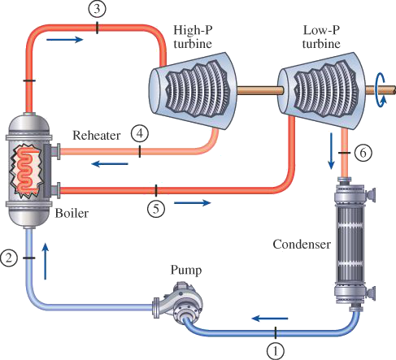
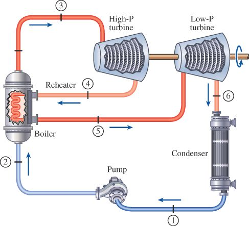
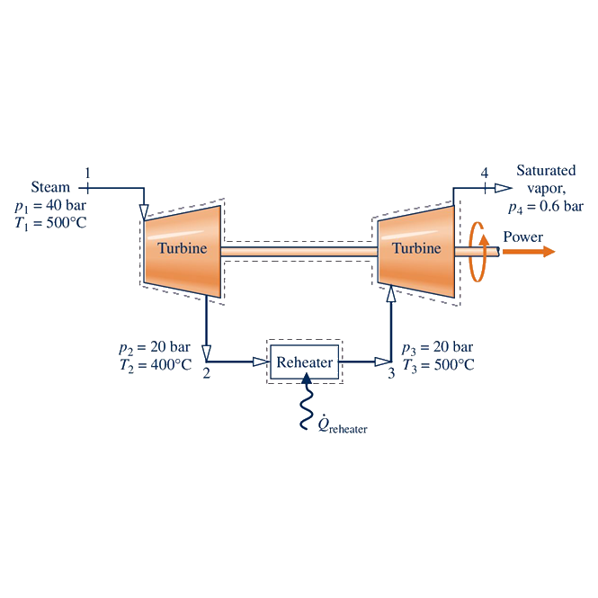

Hello world! This is HTML5 Boilerplate.
Boilerplate
\begin{equation} x = 5 \quad \ce{H2O} \end{equation} \begin{matrix} \tag{next} \dot E_{in} &-& \dot E_{out} &=& \frac{d}{{\rm d}t} E_{sys} \\ \overbrace{\dot mh_{in} + \dot Q_{in} + \dot mh_{in} + \dot Q_{in}} &-& \overbrace{\dot mh_{in} + \dot Q_{in} } &=& \frac{d}{{\rm d}t} E_{sys} \\ \end{matrix}
first
first
Steam enters the first-stage turbine shown in the figure at 40 bar and 500°C with a mass flow rate of 40,000 kg/hr. Steam exits the first-stage turbine at 20 bar and 400°C. The steam is then reheated at constant pressure to 500°C before entering the second-stage turbine. Steam leaves the second stage as saturated vapor at 0.6 bar. Assume steady state operation and ignore stray heat transfer and kinetic and potential energy effects. Determine the volumetric flow rate of the steam at the inlet to the first-stage turbine, in m³/min, the rate of heat transfer to the steam flowing through the reheater, in kW, and the total power produced by the two stages of the turbine, in kW.

A steam power plant operates on the reheat Rankine cycle. Steam enters the high-pressure turbine at 12.5 MPa and 550°C at a rate of 7.7 kg/s and leaves at 2 MPa. Steam is then reheated at constant pressure to 450°C before it expands in the low-pressure turbine. The isentropic efficiencies of the turbine and the pump are 85 percent and 90 percent, respectively. If steam leaves the condenser as a saturated liquid at 10 kPa, determine (a) the net power output and (b) the thermal efficiency.

A steam power plant operates on the reheat Rankine cycle. Steam enters the high-pressure turbine at 12.5 MPa and 550°C at a rate of 7.7 kg/s and leaves at 2 MPa. Steam is then reheated at constant pressure to 450°C before it expands in the low-pressure turbine. The isentropic efficiencies of the turbine and the pump are 85 percent and 90 percent, respectively. If steam leaves the condenser as a saturated liquid at 10 kPa, determine (a) the net power output and (b) the thermal efficiency.


Steam enters the first-stage turbine shown in the figure at 40 bar and 500°C with a mass flow rate of 40,000 kg/hr. Steam exits the first-stage turbine at 20 bar and 400°C. The steam is then reheated at constant pressure to 500°C before entering the second-stage turbine. Steam leaves the second stage as saturated vapor at 0.6 bar. Assume steady state operation and ignore stray heat transfer and kinetic and potential energy effects. Determine the volumetric flow rate of the steam at the inlet to the first-stage turbine, in m³/min, the rate of heat transfer to the steam flowing through the reheater, in kW, and the total power produced by the two stages of the turbine, in kW.
ms9⋮4.034
second
second
Steam enters the first-stage turbine shown in the figure at 40 bar and 500°C with a mass flow rate of 40,000 kg/hr. Steam exits the first-stage turbine at 20 bar and 400°C. The steam is then reheated at constant pressure to 500°C before entering the second-stage turbine. Steam leaves the second stage as saturated vapor at 0.6 bar. Assume steady state operation and ignore stray heat transfer and kinetic and potential energy effects. Determine the volumetric flow rate of the steam at the inlet to the first-stage turbine, in m³/min, the rate of heat transfer to the steam flowing through the reheater, in kW, and the total power produced by the two stages of the turbine, in kW.
A steam power plant operates on the reheat Rankine cycle. Steam enters the high-pressure turbine at 12.5 MPa and 550°C at a rate of 7.7 kg/s and leaves at 2 MPa. Steam is then reheated at constant pressure to 450°C before it expands in the low-pressure turbine. The isentropic efficiencies of the turbine and the pump are 85 percent and 90 percent, respectively. If steam leaves the condenser as a saturated liquid at 10 kPa, determine (a) the net power output and (b) the thermal efficiency.
Fade In Tooltip on Hover
When you move the mouse over the text below, the tooltip text will fade in and take 1 second to go from completely invisible to visible.
Hover over me
Tooltip text
flex-wrap: wrap; flex-direction: row;
- 1
- 2
- 3
- 4
flex-flow: row wrap;
- 1
- 2
- 3
- 4